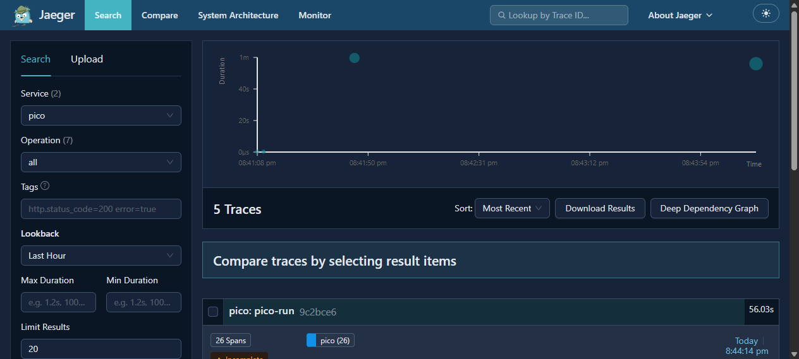
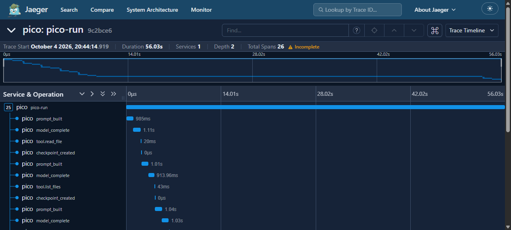
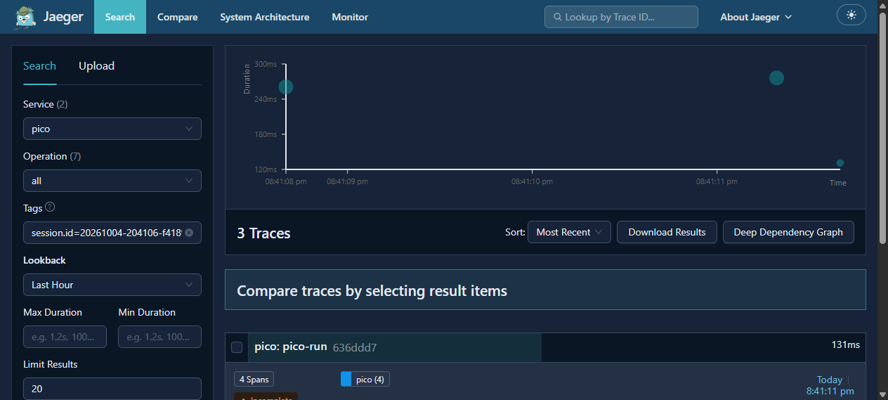
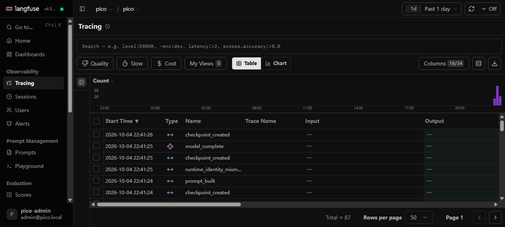
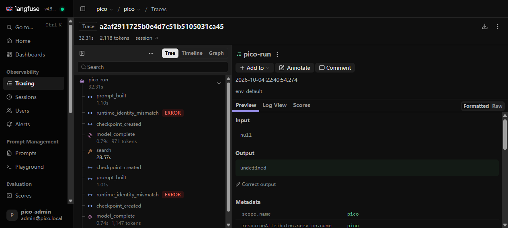
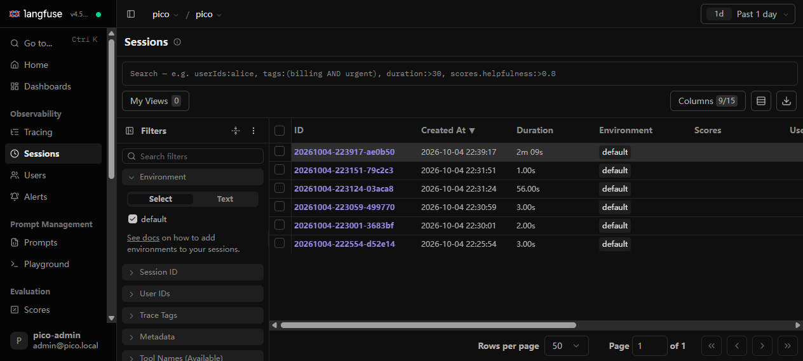
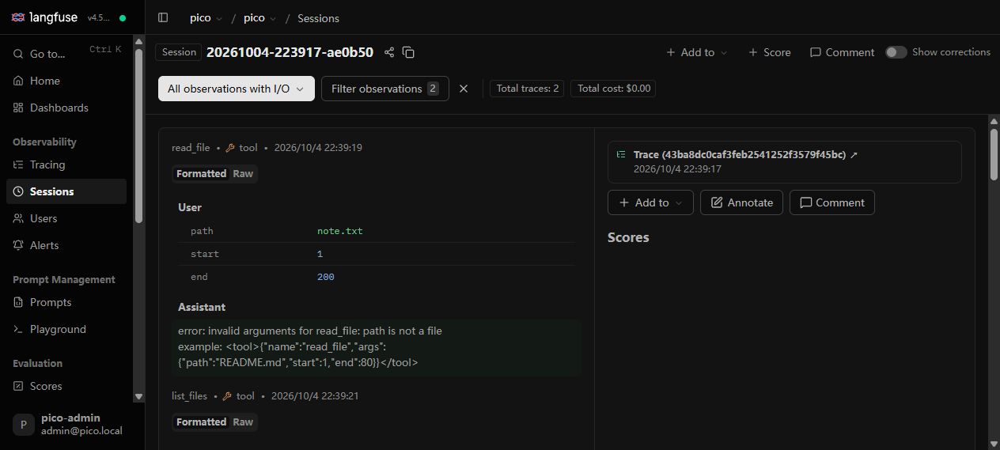

本地 Code Agent Runtime / Harness
tether 是一个运行在本地终端的 code agent harness。模型只是一块可替换的部件—— 真正积累下来的是外面这层受控执行环境：上下文有预算有优先级、工具有边界、 状态可恢复、过程可观测。这是它和「模型加几个工具」的本质区别。
prompt 按 section 划分（prefix / checkpoint / memory / 相关记忆 / history / 当前请求），每段有独立字符预算与固定的缩减顺序，超预算时按优先级裁剪，当前请求永远保留。
工具注册、参数校验、路径白名单、风险审批、重复调用检测都在应用侧强制执行。拦截不依赖模型自觉。
每次工具执行后写 checkpoint，恢复时校验工作区指纹与运行时身份，stale 状态重新锚定，绝不误信旧状态继续执行。
每次 run 固定产出 task_state.json、trace.jsonl、report.json 三件工件，并按 OpenTelemetry GenAI 语义约定上报 Jaeger 与 Langfuse。
下面是任务 path_escape_recovery 的一次真实 run（DeepSeek 模型，
run_20261005-081410-452a72），事件数据来自该 run 的
trace.jsonl，逐条原样嵌入本页，未做任何手工改动。
这条 run 还触发了 tether 的路径防护：工作区外的写入被拦在工作区内，任务仍然正常完成。
全部数字来自可复现的本地实验，对外统一口径。合成模式用 FakeModelClient 跑确定性脚本， 验证 harness 机制本身；真实模式用 deepseek-flash（DeepSeek-V4.1）跑同一批任务，反映模型能力。 两种模式测的东西不同，数字不可互换。
FakeModelClient 确定性脚本，验证 harness 机制本身：runtime 合同稳定，模型这一层固定。
失败的 3 次来自设计上不带 checkpoint 的场景（checkpoint 文件缺失，按设计必然失败）。
stale 重新锚定率 100%、workspace 漂移识别率 100%、误信旧状态继续执行 0%。
deepseek-flash 跑同一批固定任务。与合成 18/18 一起讲：前者测模型能力，后者测 harness 合同稳定。
18 个任务共 43 次调用、$0.005247（2026-10-05 实测，高峰时段价）。
节省约 69% 成本（$0.011892）。每个任务首轮调用是冷启动，命中率天然被拉低；它是「稳定前缀跨轮不变」设计的直接收益证据。
四层消融，合成模式。平均 prompt 从 8490.33 字符压到 6173.67 字符，当前请求保留率 100%。
12 任务 × 5 次的大样本消融：记忆开启后重复读 60 次降为 0 次，平均工具步数 1.00 降为 0.00。
tether 把运行事件按 OpenTelemetry GenAI 语义约定同时上报 Jaeger 与 Langfuse： trace = 一次 run，span = 单次动作，session.id = 会话层。 trace id 由 run_id 的 sha256 派生，确定性生成，两个后端可以互相对上同一次运行。







数字口径见 benchmarks/results/ 下的实验报告与归档（本页数字面板与其逐条对应）。
cd D:/md/AI实习/tether
D:/Dev/miniconda3/python.exe scripts/reproduce_resume_archive.py \
--out-dir benchmarks/results/resume-archiveD:/Dev/miniconda3/python.exe scripts/run_ablation_experiments.py \
--out-dir artifacts/ablation --runs-root tmp/runsD:/Dev/miniconda3/python.exe scripts/run_deepseek_benchmark.py \
--output-json benchmarks/results/cost-card-2026-10-05/deepseek-flash.json \
--workspace-root benchmarks/results/cost-card-2026-10-05/workspaces
D:/Dev/miniconda3/python.exe scripts/build_cost_card.py \
--runs-root benchmarks/results/cost-card-2026-10-05/workspaces \
--output benchmarks/results/cost-card-2026-10-05/cost-card.md